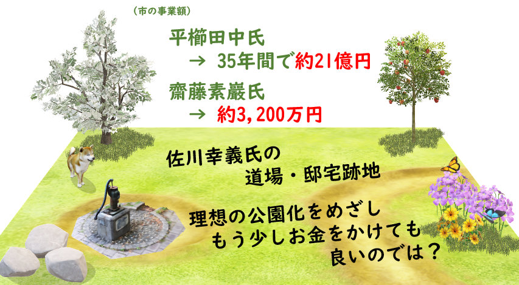

小平市議 安竹洋平の主張等 > 一般質問 > 令和2年12月定例会 > 3件目

📄会議録を見る
小平市内には、日本や世界中から多くの人を引き付けるような魅力のある歴史上の人物（以下歴史的人物という）がこれまで何人も暮らしていた。そこで、遺跡などの建造物や自然環境だけではなく、歴史的人物に焦点を当てることにより、まちに物語（ストーリー）を持たせるとよいと考える。観光や移住によって人が集まるだけではなく、地元愛へもつながると考え、以下質問する。
Q1. 市内の歴史的人物のうち、主に平櫛田中氏の邸宅や彫刻、斎藤素巖氏の彫刻などが市の財産となり、観光の柱にもなっている。市として、このように特定の歴史的人物を取り上げる際、人物の選定基準はあるか。また、どのように選定するか。
Q2. 市は、市の歴史的人物をどれだけ把握しているか。
Q3. 市ホームページや、こだいら観光まちづくり協会などと連携し、歴史的人物を発掘するための市民アンケート調査を行ってはどうか。
Q4. 地域ごとに、どういう歴史的人物がどのように暮らしていたか等をまとめ、観光や教育に活かしてはどうか。
Q. 平櫛田中氏や齋藤素巖氏は、文書などからたどった歴史的人物ではないですね？
上水南町、合気道の第一人者であった佐川幸義氏が住まれていて、道場もあった。佐川氏については、資料もたくさん残っている、書籍もたくさん出版されている。ファンの方も多い。
亡くなられたあと、ご本人の意思を通じて、ご遺族から、小平市に邸宅・道場とその土地が寄附された。（建物は取り壊され、樹木の多くは伐採され）公園化が予定されている。
Q. 佐川幸義氏は、歴史的人物の一人として、市で取り上げてもよい好例だと思うがどうか。
🥱 結局基準はよく分からず
平櫛田中氏、齋藤素巖氏は、文書からたどった方ではないものの、歴史的人物となっています。市内に居住し、芸術が高く評価されたということですが、注目しているのは「芸術」だけなのでしょうか。このあたりの基準がよく分かりません。特に明確な基準はない、ということでしょう。時間切れになってしまいましたので、また確認していきます。
以上